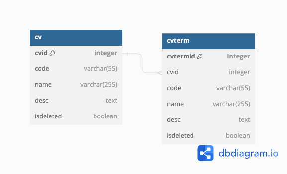
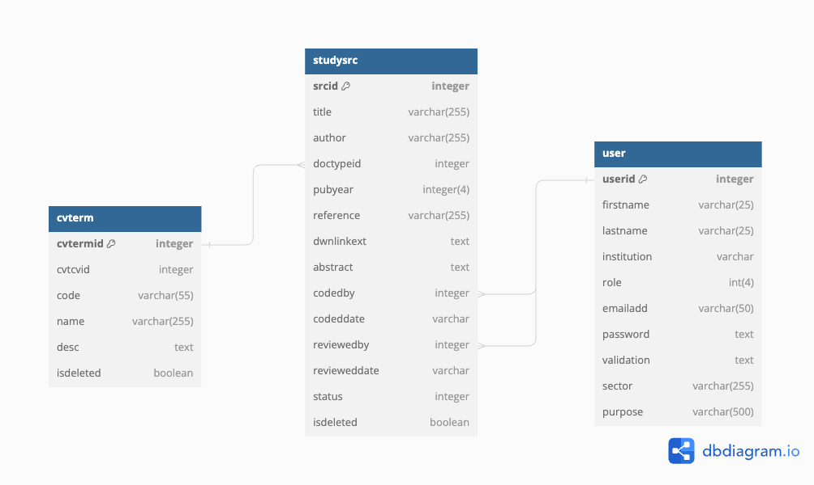
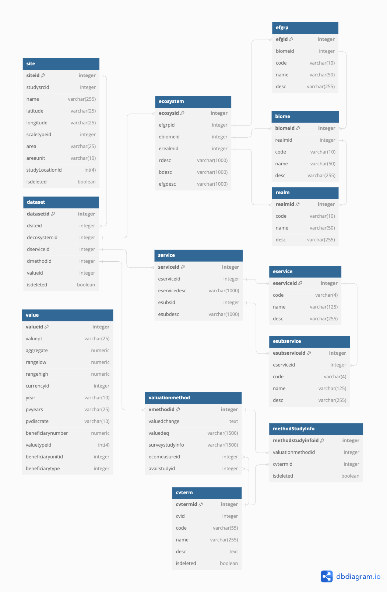
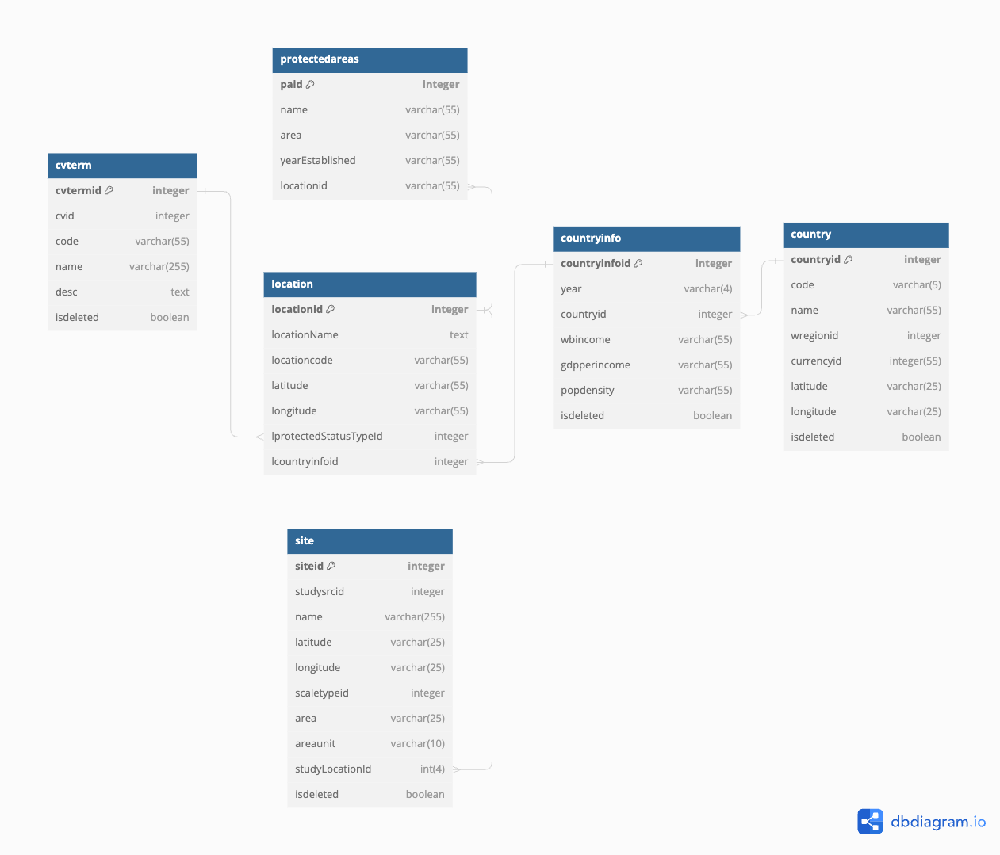
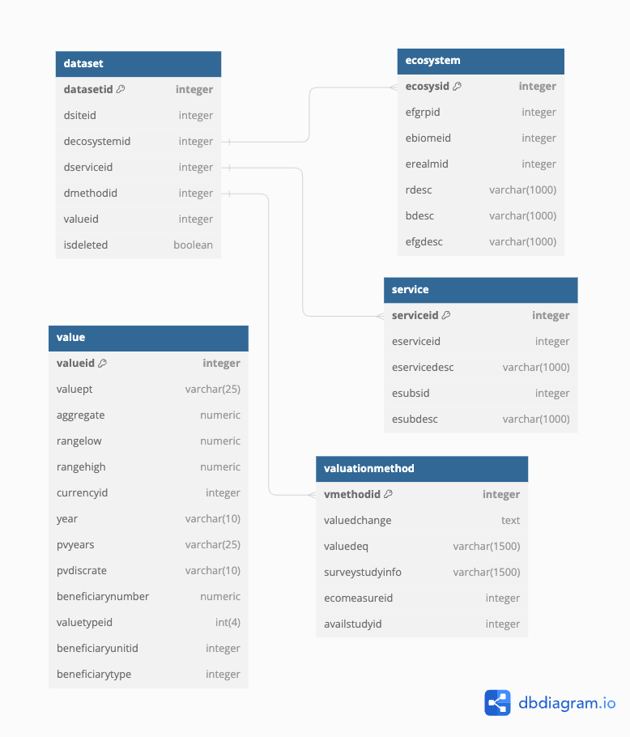
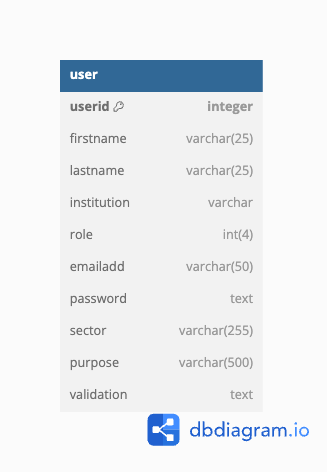

Database Structure
Database Structure
The SIBOL-EVES database consists of 5 major tables (Table 1). The controlled vocabulary, study source, study site, dataset (Focus, Method, Values) and the users’ table.
Table 1. Major Tables of the SIBOL-EVES Database
|
Group |
Tables |
|
Dictionary (Controlled Vocabulary) |
Cv, Term contains: Sub-Attributes: Country (Country Name, Currency, Country Info per year - WB Income group, GDP per Capita, Population Density); Ecosystem (Realm, Biome, EFG); Service (EService, ESubservice). |
|
Study Source |
Study Source |
|
Study Site |
Site (Site Name, Location, Latitude, Longitude, Climate type); Country Info (Country, Year of Study, Population Density, GDP per capita, WB income group); Attributes (Attribute, Protected Status, Protected Area Name, Scale, Area, Area Unit) |
|
Study focus |
Ecosystem -> (Realm, Biome, EFG) |
|
Method |
Method -> ValuationMethod |
|
Values |
Values |
|
Dataset |
<Contains all the tables in Study Focus, Method, and Values> |
a. Controlled Vocabulary is organized terms used to describe data on this website which is also used to query, retrieve and browse through contents and data easily and accurately. These are the terms gathered and used in the database: Available study info, Beneficiary unit, Climate, Country, Currency, Document type, Economic measure, Protected status, Scale, Site attribute, Unit, Value type, Protected areas, Beneficiary type, Service, Valuation method and Sub-attributes for Country (Country Name, Currency, Country Info per year – WB Income Group, GDP per Capita, Population Density), Ecosystem (Realm, Biome, EFG), and Service (Eservice, Esubservice).

b. Study Source contains the basic bibliographic information about a study such as title, author, document type, publication year, and source of the study by document type.

c. Study Site contains information on where the study was conducted. This information includes Site (Site Name, Location, Latitude, Longitude, Climate Type); Country (Country, Year of Study, Population Density, GDP per Capita, WB Income Group); Attributes (Attribute, Protected Status, Protected Area Name, Scale, Area, Area Unit)

d. location.

- The Dataset contains all the tables in Study Focus (Ecosystem (Realm, Biome, EFG) and Service (Eservice and Esubservice), Method, and Values.

f. The user table contains all the information about the user whether he/she is a regular user of the site, a curator, content manager, or an administrator.

Created with the Personal Edition of HelpNDoc: Make your documentation accessible on any device with HelpNDoc